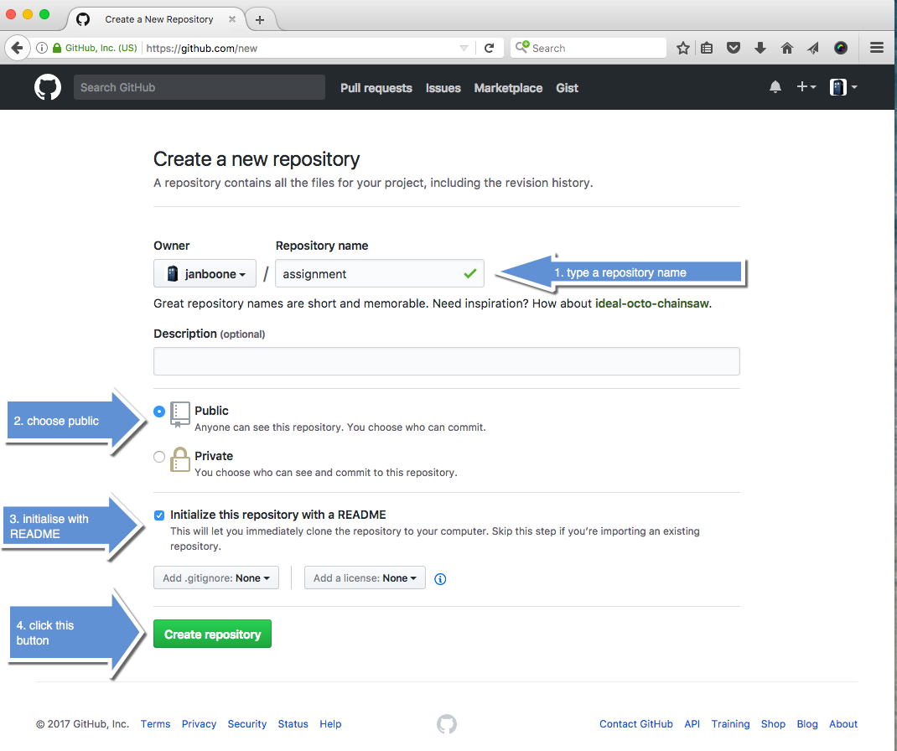

GitHub¶
We assume that you have installed all the software on the previous page. Now we start using GitHub. GitHub allows you to collaborate with others. This is also the way that you publish your assignments so that we can grade them.
You will need to use github for three things:
- you sign up at github
- you create a repository “assignments” at github
- you upload assignments at github
We will go over each of these steps.
Sign up¶
Go to the GitHub page and click on the green “sign up” button at the top. At the join GitHub page, you set up a personal account. Fill in the required information and click the green “Create an account” button.
In step 2 choose the free account. Then move on to your dashboard (step 3).
Create repository¶
- Now create your first repository. Call this, for instance, “assignments”. This is what you need to do:
Once you created the new repository, follow the following 4 steps on the “Create a new repository” page:
Well done, you have created your first repository!
The final step is to upload your assignments; e.g. your jupyter notebook.
uploading assignments¶
There are a number of ways in which you can get your assignments on github:
for the CV assignment that only uses markdown, you can create the CV.md file on-line and adjust the README file to create a link to this CV file on-line as well
if you created your CV off-line and need to get the relevant files on github or if you want to get your jupyter notebook on github, you can follow one of the following ways (depending on your media player, you may want to download the videos and then watch them):
- uploading your assignments with drag-and-drop using a browser
- uploading your assignments using the shell or terminal (see below for more detailed instructions)
If you can replicate the steps above, you are done! If you would like to know more about github and how to use it, look at the next section (which is optional).
OPTIONAL: More sophisticated use of github¶
This section is optional; it is not needed for the course. We will teach you how to use github from the command line. Moreover, we show you how you can convert your markdown CV into an html file and publish it on github as website. For this you need to install pandoc (and latex, if you want to use equations). Both pandoc and latex are optional on the installation page.
An introduction to GitHub can be found here
One of the goals of this course is that you can find your way around open source software yourself; including finding the information on how to use it. Hence look for a GitHub tutorial on the web and read it carefully.
Basically using git and github boils down to the following:

Set up Git¶
If you want to use git and github with the command line, we need to set up Git on your computer (which you installed before) to work with GitHub: this page explains how to set up Git for this purpose. Follow all the steps described on this page. That is, both “Setting up Git” and “Next steps: Authenticating with GitHub from Git”.
When it comes to “Authenticating with GitHub from Git” follow the recommended route of “Connecting over HTTPS”.
Repository¶
Note
GitHub has changed the style of its webpages since the screenshots below were made; hence what you will see is not identical but it will be close enough for you to understand what you should be doing
- Now create your first repository. Call this, for instance, “first-repo”:
{kind=link}
- Click on “Create repository”, and then you see (but not the arrow...):

- if you are creating your “second-repo” as asked below; you can stop here and continue where you left.
- Click on “Settings”
{kind=link}
- Click on “Launch automatic page generator”
{kind=link}
- Leave the text as it is and click on “Continue to layouts”

- Choose one of the themes at the top (“Cayman”, “Slate” etc.) and click “Publish page”
{kind=link}
- At the top you see the web address at which your page is published. Type this address in a browser and enjoy!
- Also note the branch name “master”
- by clicking on it, you can switch to the branch “gh-pages”. The file “index.html” is the one that GitHub shows when someone goes to the address http://janboone.github.io/first-repo/
{kind=link}
Command line¶
Let’s create a second repository and use the command line. We are going to use files from https://github.com/ryangray/buttondown. Later, you will be able to clone this repository, but we are not that far, yet. Hence, you can download the relevant files below.
Note that below you need to type in (or copy/paste) some shell/terminal commands that you do not understand (yet). Don’t worry about this now; later in the course we come back to this.
- Create a new repository, say “second-repo”, using the steps above.
- Using Windows Explorer on Windows (Finder on Mac) or whatever program you like, create a new directory “github” in a place that you can navigate to using the command line. On Windows, you may want to create it as “C:\github”; on Mac as “~/github”.
On Linux and Mac computers, “~” indicates your home-directory. On most terminals you can use the “tab” key to complete what you are typing. Hence typing “~/git ‘tab’” will complete to “~/github”; unless you have a directory “~/gitty” in which case the terminal will ask you which completion you want. Similarly for “C:\git” on Windows.
- Go to your command line (e.g. command prompt under Windows or another console; Terminal or iTerm2 under Mac, whatever you installed here).
- Navigate to the new directory “github” by typing at the command line either cd C:\github or cd ~/github (whatever directory you chose to create)
- Type at the command line: git clone https://github.com/janboone/second-repo where you change “/janboone/second-repo” to your own user name (instead of “janboone”) and the name of the repository just created (if you did not choose “second-repo”)
- The terminal will give output like
Cloning into 'second-repo'...
remote: Counting objects: 3, done.
remote: Total 3 (delta 0), reused 0 (delta 0), pack-reused 0
Unpacking objects: 100% (3/3), done.
Checking connectivity... done.
- Note that at this point there is no need to understand what you are typing here and why. This will become clear later
- Type: cd second-repo
- git checkout --orphan gh-pages
Switched to a new branch 'gh-pages'
- git rm -rf . –note that this is “-rf [space] .”
rm 'README.md'
- touch .nojekyll –this is step is (only) necessary if you want to use sphinx; clearly, the step should be skipped if you do want to use Jekyll.
[gh-pages (root-commit) 8d3b1d1] First pages commit
5 files changed, 1154 insertions(+)
create mode 100644 .nojekyll
create mode 100644 NoCss.html
create mode 100755 buttondown.css
create mode 100644 index.html
create mode 100755 pandoc_example.md
- git push origin gh-pages
Counting objects: 7, done.
Delta compression using up to 8 threads.
Compressing objects: 100% (6/6), done.
Writing objects: 100% (7/7), 8.45 KiB | 0 bytes/s, done.
Total 7 (delta 2), reused 0 (delta 0)
To https://github.com/janboone/second-repo
[new branch] gh-pages -> gh-pages
- Go to the website: “http://janboone.github.io/second-repo/” where you change “janboone” into your own github user name and “second-repo” into the name of your own second repository. Note that it may take some time before your changes are published on line.
- At http://janboone.github.io/second-repo/NoCss.html you can see the page where pandoc created the html from the markdown file without the css file.